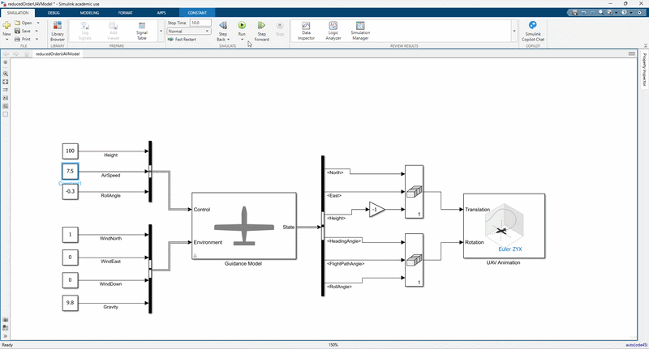

Comprehensive Guide:
Reduced-Order Fixed-Wing
UAV Guidance Model in MATLAB
Development of UAV ROM Fixed-Wing Guidance Model using Matlab

1. Concept of the Reduced-Order UAV Model (ROM)
In aerospace engineering, a full-fidelity 6-Degrees-of-Freedom (6-DoF) aircraft model requires solving non-linear Newton-Euler equations of motion using detailed aerodynamic coefficients ($C_L, C_D, C_m$), control surface deflections (ailerons, elevators, rudder), engine thrust curves, and moment of inertia matrices. While essential for low-level flight control system (FCS) design, full 6-DoF models are computationally heavy and unnecessary for high-level tasks like path planning, swarm coordination, or geofencing.
A Reduced-Order Model (ROM) abstracts away high-frequency surface and rotational dynamics. Instead of modeling individual control surface deflections, the MATLAB guidanceModel block (using FixedWingGuidance) assumes that an underlying autopilot is already controlling the aircraft. It treats the UAV as a kinematic point-mass system operating under coordinated-turn constraints with second-order roll responses.
2. Complete Architecture & Block Overview
+-------------------------------------------------------+
CONTROL INPUT BUS | MATLAB GUIDANCE MODEL BLOCK | STATE OUTPUT BUS
- Height (h_c) ---->| |---> North (x_e)
- AirSpeed (Va_c) ->| +-----------------------------------------------+ |---> East (y_e)
- RollAngle (phi_c)>| | INNER-LOOP AUTOPILOT | |---> Height (h)
| | - Proportional Height Controller | |---> AirSpeed (V_a)
ENVIRONMENT BUS | | - Proportional Flight Path Controller | |---> Heading Angle (χ)
- WindNorth (V_wn)->| | - Proportional Airspeed Controller | |---> Flight Path Angle (γ)
- WindEast (V_we) ->| | - PD Roll Angle Controller | |---> Roll Angle (φ)
- WindDown (V_wd) ->| +-----------------------------------------------+ |---> Roll Angle Rate (φ̇)
- Gravity (g) ----->| | |
| v |
| +-----------------------------------------------+ |
| | POINT-MASS KINEMATICS | |
| | - Coordinated Turn: χ̇ = (g / V_g) * tan(φ) | |
| | - Velocity Integration (NED Frame) | |
| +-----------------------------------------------+ |
+-------------------------------------------------------+3. Inputs, Environment, and Initial States
3.1 Control Input Bus (FixedWingGuidanceControlBus)
These are the high-level guidance commands passed to the block at each time step:
| Signal Name | Symbol | Units | Description |
|---|---|---|---|
| Height | $h_c$ | meters ($\text{m}$) | Commanded altitude target above ground |
| AirSpeed | $V_{ac}$ | meters/second ($\text{m/s}$) | Commanded airspeed relative to the surrounding air mass |
| RollAngle | $\phi_c$ | radians ($\text{rad}$) | Commanded bank angle (controls turn rate) |
3.2 Environment Input Bus (FixedWingGuidanceEnvironmentBus)
Environmental factors affecting airspeed vectors and gravity:
| Signal Name | Symbol | Units | Description |
|---|---|---|---|
| WindNorth | $V_{wn}$ | $\text{m/s}$ | Wind velocity component toward North |
| WindEast | $V_{we}$ | $\text{m/s}$ | Wind velocity component toward East |
| WindDown | $V_{wd}$ | $\text{m/s}$ | Downward wind velocity component |
| Gravity | $g$ | $\text{m/s}^2$ | Gravitational acceleration (typically $9.81\,\text{m/s}^2$) |
3.3 Initial State Configuration Parameters
Configured in the block mask to set the initial conditions at $t = 0$:
- North Position ($x_{e0}$) & East Position ($y_{e0}$): $[0, 0]\,\text{m}$
- Height ($h_0$): Initial altitude (e.g., $80\,\text{m}$)
- AirSpeed ($V_{a0}$): Initial velocity (e.g., $0\,\text{m/s}$ or cruise speed)
- Heading Angle ($\chi_0$): Initial course relative to true North ($\text{rad}$)
- Flight Path Angle ($\gamma_0$): Initial climb/descent angle ($\text{rad}$)
- Roll Angle ($\phi_0$) & Roll Angular Velocity ($\dot{\phi}_0$): Initial bank dynamics
4. Mathematical Algorithms & Governing Equations
The reduced-order model solves an 8-state system combining autopilot control loops and kinematic integrations.
Algorithm Step 1: Roll Dynamics (PD Control)
The roll response is governed by a 2nd-order spring-damper differential equation representing roll autopilot and aileron actuation lag:
$$\ddot{\phi} = k_{P\phi} (\phi_c - \phi) + k_{D\phi} (-\dot{\phi})$$
where $k_{P\phi}$ and $k_{D\phi}$ are the Proportional and Derivative roll gains.
Algorithm Step 2: Flight Path Angle Command & Altitude Loop
The height error determines a target flight path angle ($\gamma_c$), bounded by physical pitch limits:
$$\gamma_c = \min\left(\max\left(k_{Ph} (h_c - h), -\gamma_{\max}\right), \gamma_{\max}\right) \cdot \frac{1}{V_g}$$
The actual flight path angle ($\gamma$) then updates via a first-order response:
$$\dot{\gamma} = k_{P\gamma} (\gamma_c - \gamma)$$
Algorithm Step 3: Airspeed Dynamics
Airspeed tracks the command $V_{ac}$ via proportional throttle response:
$$\dot{V}_a = k_{PVa} (V_{ac} - V_a)$$
Algorithm Step 4: Ground Speed & Coordinated Turn Kinematics
The model computes ground velocity ($V_g$) by combining airspeed ($V_a$), flight path angle ($\gamma$), heading angle ($\chi$), and wind vectors ($V_{wn}, V_{we}, V_{wd}$):
$$\vec{V}_g = \vec{V}_a + \vec{V}_{\text{wind}}$$
Assuming zero sideslip angle ($\beta \approx 0$), the course angle rate ($\dot{\chi}$) is derived directly from the horizontal lift component required for a coordinated turn:
$$\dot{\chi} = \frac{g \cos(\chi - \psi)}{V_g} \tan\phi \approx \frac{g}{V_g} \tan\phi$$
Algorithm Step 5: Translational Position Integration
Finally, 3D inertial position coordinates (North, East, Height) are integrated:
$$\dot{x}_e = V_g \cos\chi \cos\gamma$$
$$\dot{y}_e = V_g \sin\chi \cos\gamma$$
$$\dot{h} = V_g \sin\gamma$$
5. Output States & Feedback Structure
5.1 Output State Bus (FixedWingGuidanceStateBus)
The block outputs 8 scalar state variables at every integration step:
North($x_e$): Position along North axis ($\text{m}$)East($y_e$): Position along East axis ($\text{m}$)Height($h$): Position above ground ($\text{m}$)AirSpeed($V_a$): Current speed relative to air ($\text{m/s}$)HeadingAngle($\chi$): Angle between ground velocity and North ($\text{rad}$)FlightPathAngle($\gamma$): Vertical climb angle ($\text{rad}$)RollAngle($\phi$): Roll bank angle ($\text{rad}$)RollAngleRate($\dot{\phi}$): Angular roll velocity ($\text{rad/s}$)
5.2 Closed-Loop Feedback Flow
[ Commanded Inputs ] ───> (+) ───[ Controller Gains ]───> [ Kinematic Integrator ]
│ │
▲ │
└────────────── Feedback ───────────────┘The model is internal closed-loop:
- Height Feedback: $h$ is subtracted from $h_c$ inside the block to generate $\gamma_c$.
- Flight Path Feedback: $\gamma$ is subtracted from $\gamma_c$ to drive vertical acceleration.
- Airspeed Feedback: $V_a$ is subtracted from $V_{ac}$ to adjust thrust/acceleration.
- Roll Feedback: $\phi$ and $\dot{\phi}$ are fed back into the PD controller $[k_{P\phi}, k_{D\phi}]$ to compute roll acceleration $\ddot{\phi}$.
6. How to Generate Flight Trajectories

Figure: Example flight trajectory generated by the reduced-order fixed-wing guidance model in MATLAB.
Method 1: Open-Loop Command Steps (Waypoints via Bus Inputs)
You can feed time-varying control inputs (e.g., step changes in $h_c$, $V_{ac}$, or $\phi_c$) to create smooth trajectories.
Method 2: Waypoint Follower Integration
Pair the Guidance Model block with the MATLAB Waypoint Follower block:
- Define 3D waypoints: $W = [[x_1, y_1, z_1]; [x_2, y_2, z_2]; \dots]$.
- The
Waypoint Followerreads current state $[x_e, y_e, h, \chi]$ and outputs target guidance commands ($h_c, V_{ac}, \phi_c$). - The
Guidance Modelintegrates those commands to compute the smooth curved flight path.
7. Model Summary & Trade-off Matrix
| Characteristic | Reduced-Order Guidance Model | Full 6-DoF Aircraft Model |
|---|---|---|
| Primary Use Case | Path planning, swarm simulation, trajectory tracking | Control surface design, aerodynamic stall testing |
| Execution Speed | Real-time / Faster-than-real-time | Slower, small numerical integration steps |
| Control Inputs | Guidance targets ($h_c, V_{ac}, \phi_c$) | Raw surface angles ($\delta_a, \delta_e, \delta_r, \delta_t$) |
| Aerodynamics | Coordinated turn assumption ($\beta=0$) | Full aerodynamic coefficients ($C_L, C_D, C_m, \dots$) |
| Actuator Dynamics | Modeled as 2nd-order PD response | Modeled as servo/mechanical transfers |
8. Roll Dynamics PD Control
From a fixed-wing Unmanned Aerial Vehicle (UAV) perspective, a Roll Dynamics PD (Proportional-Derivative) Controller is a fundamental autopilot loop designed to stabilize and control the aircraft’s bank angle ($\phi$) and roll rate ($p$).
8.1 What Is It For? (The Purpose)
When an autopilot wants a fixed-wing UAV to turn, keep its wings level, or hold a heading, it does so primarily by controlling its roll angle (banking).
The PD Controller serves two critical purposes for roll dynamics:
- Proportional Control (P): Corrects the angle error. If the UAV is tilted 20° to the left, the P-term commands a rightward deflection of the ailerons to level the wings.
- Derivative Control (D): Acts as a dampener (brake) based on the rate of roll. Without the D-term, the wings would roll fast toward the target, overshoot, swing back, and oscillate (wobble). The D-term senses how fast the UAV is rolling and applies a resisting torque to smooth out the movement, stopping the wings precisely at the desired angle.
In summary:
The P-term drives the wings toward the target angle, while the D-term acts as a dynamic brake to prevent overshoot and aerodynamic oscillations.
8.2 Inputs and Outputs
To understand the control loop, look at what flows in and out of the PD controller block:
Inputs
- Commanded Roll Angle ($\phi_{cmd}$ or $\phi_{ref}$): The desired bank angle requested by the higher-level navigation system (e.g., "bank 15° right to turn").
- Measured Roll Angle ($\phi$): The actual current bank angle from the UAV's IMU / Attitude Estimation System (AHRS).
- Measured Roll Rate ($p$ or $\dot{\phi}$): The angular rate of roll around the UAV's longitudinal (X) axis, measured directly by the rate gyro sensor.
Error Calculation:
$$\text{Error } e(t) = \phi_{cmd} - \phi$$
Output
- Aileron Deflection Command ($\delta_a$): The control signal sent to the servo actuators controlling the ailerons (differential wing surfaces).
8.3 The Control Formula
In a typical UAV flight controller (like PX4 or ArduPilot), the PD control action for roll is expressed mathematically as:
$$\delta_a = K_p (\phi_{cmd} - \phi) - K_d \cdot p$$
Where:
- $\delta_a$ = Aileron deflection angle command
- $K_p$ = Proportional gain (stiffness/responsiveness to roll angle error)
- $K_d$ = Derivative gain (damping coefficient against roll rate $p$)
- $(\phi_{cmd} - \phi)$ = Attitude tracking error
- $p$ = Roll rate ($\dot{\phi}$)
8.4 Roll Dynamics Summary Table
| Parameter | Detail |
|---|---|
| System | Fixed-Wing UAV Lateral-Directional Dynamics (Roll Axis) |
| Primary Purpose | Maintain desired bank angle, prevent rolling oscillations, ensure smooth turns |
| Input(s) | Desired roll angle ($\phi_{cmd}$), Actual roll angle ($\phi$), Roll rate ($p$) |
| Output | Aileron command ($\delta_a$) |
| Key Advantage of "D" | Adds aerodynamic damping to stop control surface overshooting |
9. Outer Loop vs. Inner Loop
In flight control systems—like those on a fixed-wing UAV—a cascaded (nested) loop architecture is used to break down a complex control task into smaller, faster, and more manageable steps.
Instead of trying to calculate aileron movements directly from a target bank angle or flight path in one single jump, the controller splits the job into an Outer Loop and an Inner Loop.
9.1 The Core Concept: Fast vs. Slow
The primary difference between the two loops comes down to what they control and how fast they operate:
[ Outer Loop: SLOW ] ──> Generates Target States ──> [ Inner Loop: FAST ] ──> Physical Actuators- Inner Loop (Fast Loop / Gyro Rate Loop):
- Role: Controls angular rates (how fast the plane is spinning/rotating: roll rate $p$, pitch rate $q$, yaw rate $r$).
- Speed: Runs extremely fast (typically 100 Hz to 400 Hz or more).
- Job: Deals with high-speed physical aerodynamics, turbulence, and structural dynamics. It directly drives the physical control surfaces (ailerons, elevators, rudder).
- Outer Loop (Slow Loop / Attitude or Guidance Loop):
- Role: Controls angles, altitude, or trajectory (where the plane is pointed or where it is going: bank angle $\phi$, pitch angle $\theta$, waypoint path).
- Speed: Runs at a lower update frequency (typically 10 Hz to 50 Hz).
- Job: Thinks ahead. It decides what rotation rates are needed to reach a desired attitude or position, and sends those rate targets as commands down to the inner loop.
9.2 Walkthrough: How They Work Together (Roll Example)
Imagine you tell the autopilot: "Bank 20 degrees to the right to make a turn."
Here is how the inner and outer loops handle that request step-by-step:
OUTER LOOP (Angle Loop) INNER LOOP (Rate Loop)
┌──────────────────────────────┐ ┌─────────────────────────────────┐
│ │ │ │
[20° Target] ──> Compare with ──> Outputs Target ──> Compare with ──> Outputs Servo ──> Ailerons
Bank Angle Current Angle Roll Rate Gyro Rate Deflection Move
(e.g., 0°) (e.g., +10°/sec) (e.g., 0°/sec) Command (δa)
│ │ │ │
└──────────────────────────────┘ └─────────────────────────────────┘Step 1: The Outer Loop (Attitude / Angle)
- Reads: Target Roll Angle ($\phi_{cmd} = 20^\circ$) and Current Roll Angle ($\phi = 0^\circ$).
- Calculates Error: Angle Error = $20^\circ - 0^\circ = 20^\circ$.
- Outputs: A Target Roll Rate command ($p_{cmd}$).
- Outer Loop Logic: "We have a $20^\circ$ error, so let's command a roll rate of $+10^\circ/\text{sec}$ to roll toward the target."
Step 2: The Inner Loop (Rate)
- Reads: Target Roll Rate ($p_{cmd} = +10^\circ/\text{sec}$) from the outer loop, and Current Roll Rate ($p = 0^\circ/\text{sec}$) from the gyro.
- Calculates Error: Rate Error = $10^\circ/\text{sec} - 0^\circ/\text{sec} = 10^\circ/\text{sec}$.
- Outputs: Aileron Deflection Command ($\delta_a$).
- Inner Loop Logic: "We need to roll at $+10^\circ/\text{sec}$, so move the left aileron down and right aileron up by $5^\circ$."
Step 3: Closing the Loops as the Plane Moves
- As the wings start rolling at $+10^\circ/\text{sec}$, the inner loop keeps the roll rate steady despite wind gusts.
- As the bank angle approaches $20^\circ$, the outer loop sees the angle error shrinking and gradually lowers its roll rate target ($p_{cmd}$) down toward $0^\circ/\text{sec}$.
- When $p_{cmd}$ reaches zero, the inner loop centers the ailerons to stop the roll right at $20^\circ$.
9.3 Why Split Them into Two Loops?
Why not just use one single controller that takes roll angle error and outputs aileron deflection directly?
- Stability & Damping: Angular rates change much faster than angles. By having a dedicated fast rate loop (inner loop), the controller can damp out wind gusts and aerodynamic instability before they ever affect the overall tilt angle of the aircraft.
- Easier Tuning: You can tune the inner loop first to ensure the aircraft feels stable and responsive to rate commands. Once the inner rate loop is rock-solid, tuning the outer angle/navigation loop is much easier.
- Modular Design: You can stack additional outer loops on top without changing the inner loop:
- Outer-most Loop (Navigation/Guidance): Waypoint Target $\rightarrow$ Commands Heading/Bank Angle.
- Middle Outer Loop (Attitude): Bank Angle $\rightarrow$ Commands Roll Rate.
- Inner Loop (Rate/Actuation): Roll Rate $\rightarrow$ Commands Servo/Aileron.
9.4 Inner/Outer Loop Comparison Table
| Feature | Outer Loop | Inner Loop |
|---|---|---|
| Primary Variable | Attitude / Position (e.g., Bank Angle $\phi$, Altitude $h$) | Angular Rates (e.g., Roll Rate $p$, Pitch Rate $q$) |
| Sensor Source | IMU/AHRS Orientation, GPS, Altimeter | High-speed Rate Gyroscope |
| Output Target | Rate Commands (e.g., $p_{cmd}$) sent to Inner Loop | Servo Deflection Commands (e.g., $\delta_a$) sent to Actuators |
| Execution Rate | Slower (~10 Hz – 50 Hz) | Faster (~100 Hz – 400+ Hz) |
| Physical Analogy | The Driver: Decides how much to turn the steering wheel based on the road path. | The Power Steering / Suspension: Instantly reacts to road bumps and physical resistance to keep the wheels turning smoothly. |